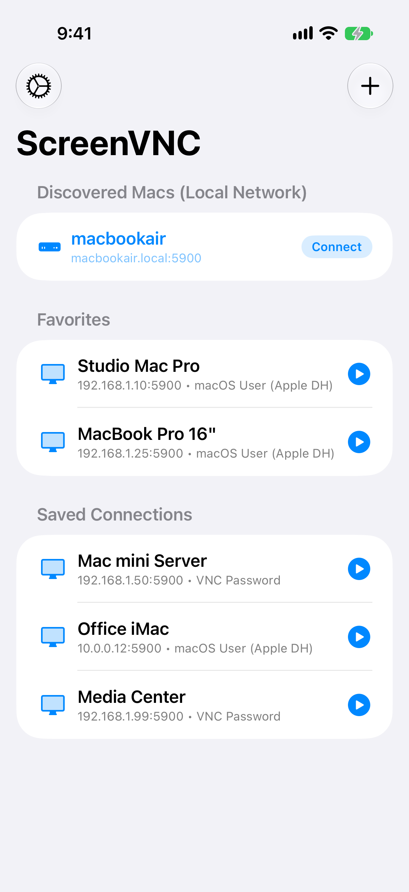
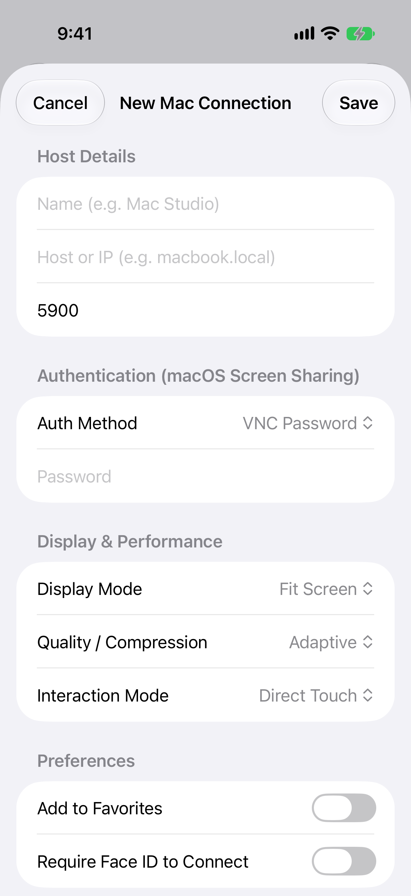
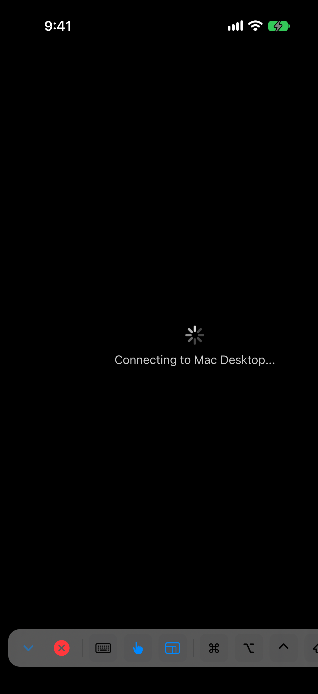
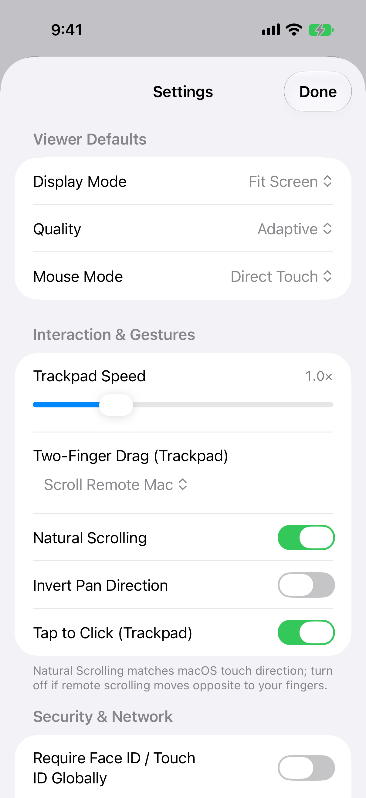
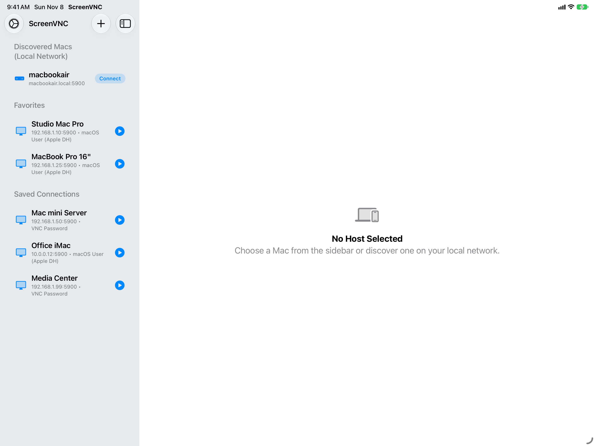

Your Mac, on your iPhone and iPad.
ScreenVNC is a Mac-first VNC viewer for macOS Screen Sharing. Connect over your local network or a VPN and see your desktop right on your device, then take control with natural touch gestures and a full keyboard.
Setup
- On your Mac, open System Settings, go to General, then Sharing, and turn on Screen Sharing.
- Install ScreenVNC on your iPhone or iPad, then pick your Mac — nearby Macs appear automatically.
- Sign in with the same Mac username and password you use every day, and take control.
Tour
Connections
Browse discovered Macs, favorites, and saved connections in one list.

New connection
Save each Mac as a profile with its own display settings.

In session
Connect to your desktop with keyboard, pointer, and modifiers close at hand.

Settings
Tune display mode, quality, mouse mode, and gestures in one place.

On iPad, connections become a sidebar next to the detail view.

Gestures
| Gesture | What it does |
|---|---|
| Tap | Click |
| Long-press | Right-click |
| Two-finger drag | Scroll |
| Drag | Move the pointer |
| Pinch | Zoom in and out |
| Keyboard bar | Type plus Command, Option, and Control |
Requirements
- A Mac with Screen Sharing enabled.
- An iPhone or iPad.
- Both devices on the same network, or connected through a VPN while you are away.
Privacy
- Credentials stay on your device and are never uploaded.
- No tracking, no analytics, and no account required.
- Saved profiles are a JSON file in Application Support, optionally backed up through your own iCloud account.
- iCloud profile backups carry settings only, never passwords.
Questions about privacy? Ask via GitHub issues.
Support
- Describe what you were doing and what you expected to see.
- Note your device, iOS version, and orientation (portrait or landscape).
- Open a GitHub issue with those details so we can reproduce it.